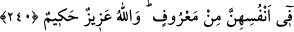

dönmek gerekir. Yoksa Amr’ın huzurunda durup Zeyd’e nidâ eden kişiye, asla icâbet
olunmaz. Şeyh Sa’dî Şîrâzî demiştir ki:
Fıstık gibi, her tarafını öz olarak gördüğün insan başka,
Soğan gibi kabuk üstüne kabuk bağlayan insan başkadır.
Bunlar birtakım zâhidlerdir yüzleri halka,
Arkaları Hakk’a veya kıbleye dönük namaz kılarlar.
Tevfîk Allah’tandır.
240. Sizden ölüp de (dul) eşler bırakan kimseler, zevcelerinin, evlerinden
çıkarılmadan, bir yıla kadar bıraktıkları maldan faydalanmaları husûsunda
(sağlıklarında) vasiyet etsinler. Eğer o kadınlar, (kendiliklerinden) çıkıp giderlerse,
kendileri hakkında yaptıkları meşrû şeylerden size bir günah yoktur. Allah azîzdir,
hakîmdir.
Âyette henüz ölmemiş fakat ölmek üzere olan eşler kasdedilmiştir. Çünkü, vefâttan
sonra vasiyyette bulunmak mümkün değildir. Ölmekte olduğunu anlayan kocaların
ölmeden önce, eşlerinin bir yıla kadar faydalanmaları için bıraktıkları terekeden nafaka
ve kalacak yer için vasiyet etmeleri vâcibtir.
Bu âyet, Hakîm b. Hâris isimli Taifli bir adam hakkında nâzil olmuştur. Hakîm, ana-
babası, karısı ve çocuklarıyla beraber Medîne’ye hicret etti ve orada öldü. Allah Teâlâ
bu âyeti indirdi. Rasûl-i Ekrem Efendimiz (s.a.), adamın mîrâsından ana-babasına ve
çocuklarına verdi. Hanımına ise bir şey vermeyip onu, bir yıl boyunca kocasının
terekesinden faydalandırılmasını emretti.
İslâm’ın ilk dönemlerinde, kocası ölen kadının evlenebilmesi câiz olması için
beklemesi gereken iddet müddeti bir sene idi. Bir yıl dolmadan vârisin, onu evden
çıkarması haramdı. Evden çıkmadığı süre içinde nafaka ve kalma yerinin, kocasının
terekesinden sağlanması vâcibti. Yalnız ona mirastan pay ayrılmazdı. Eğer kadın,
kocasının evinden çıkarsa, nafaka temini de otomatikman düşerdi. Böyle olunca da ölen
adamın, terekesinden istifade etmesi için karısına vasiyette bulunması gerekirdi.
Allah Teâlâ, daha sonra inen mîrâs âyeti ile yıllık nafakayı; kadının, çocuğu veya
çocuğunun çocuğu olması hâlinde terekeden dörtte bir, bunların olmaması hâlinde ise
sekizde bir pay ile neshetmiştir. Ebû Hanîfe’ye göre; barınma yeri hakkı da düşmüştür.
Bakara Sûresi 234. âyeti ile de bir yıllık bekleme süresi, dört ay on gün ile
neshedilmiştir. Nesheden âyet, her ne kadar tilâvette bu âyetten önce ise de nüzûl
bakımından sonradır.